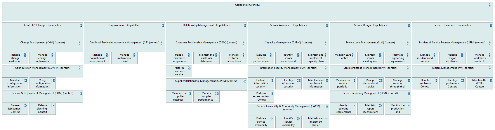

Process Grid - Context
(
)

generated_by
hierarchical_grid.py::build_grid_view[Process hGrid - Context]
generator_path
pedro/capabilities/hierarchical_grid/hierarchical_grid.py
run_at
2026-06-26T09:54:29
model_code
ITSMB full v2
Capabilities Overview
Control & Change - Capabilities
Change Management (CHM) (context)
Manage change evaluation and approval - Context
Manage change implementation and review - Context
Configuration Management (CONFM) (context)
Maintain configuration information - Context
Verify configuration information - Context
Release & Deployment Management (RDM) (context)
Release deployment - Context
Release planning - Context
Improvement - Capabilities
Continual Service Improvement Management (CSI) (context)
Manage evaluation of improvements - Context
Manage implementation of improvements - Context
Relationship Management - Capabilities
Customer Relationship Management (CRM) (context)
Handle customer complaints - Context
Maintain the customer database - Context
Manage customer satisfaction - Context
Perform customer service reviews - Context
Supplier Relationship Management (SUPPM) (context)
Maintain the supplier database - Context
Monitor supplier performance - Context
Service Assurance - Capabilities
Capacity Management (CAPM) (context)
Evaluate service performance - Context
Identify service capacity and performance requirements - Context
Maintain and implement capacity plans - Context
Information Security Management (ISM) (context)
Evaluate information security - Context
Identify information security requirements - Context
Maintain and implement information security controls and policies - Context
Perform access control - Context
Service Availability & Continuity Management (SACM) (context)
Evaluate service availability and continuity - Context
Identify service availability and continuity requirements - Context
Maintain and implement service availability and continuity plans - Context
Service Design - Capabilities
Service Level Management (SLM) (context)
Maintain SLAs - Context
Maintain service catalogues - Context
Maintain supporting agreements (OLAs and UAs) - Context
Service Portfolio Management (SPM) (context)
Maintain the service portfolio - Context
Manage demand and service proposals - Context
Manage services through their lifecycle - Context
Service Reporting Management (SRM) (context)
Identify reporting requirements - Context
Maintain report specifications - Context
Monitor the production and distribution of reports - Context
Service Operations - Capabilities
Incident & Service Request Management (ISRM) (context)
Manage incidents and service requests - Context
Manage major incidents - Context
Manage workflows needed to resolve incidents and fulfil service requests - Context
Problem Management (PM) (context)
Handle problems - Context
Identify problems - Context
Maintain the KEDB - Context